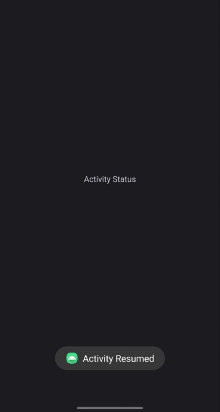
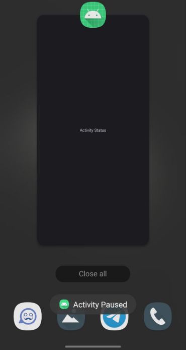
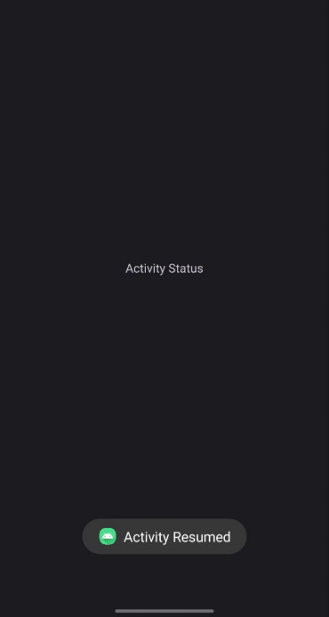
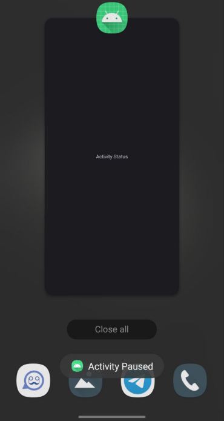
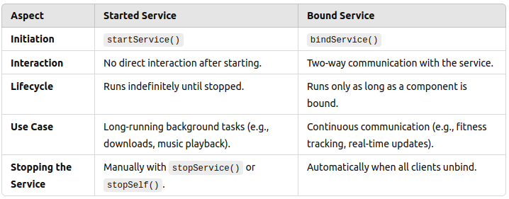

Android - Application Components
In Android, an application is composed of several key components that work together to create a functional and interactive app. These components manage different aspects of the application’s behavior and interaction with users and other apps.
1: Activities
Activities represent a single screen with a user interface. They are crucial for interacting with users and are often considered the entry points of an application.
- Purpose: Display UI elements and handle user interactions.
- Example: A settings screen or a login page.
- Lifecycle: Activities go through various states such as created, started, resumed, paused, stopped, and destroyed.
2: Services
Services run in the background to perform long-running operations or tasks without user interaction. They continue to run even if the user switches to another app.
- Purpose: Handle tasks like playing music, performing network operations, or handling system-level functions.
- Example: A music player that continues playing audio in the background.
- Types: Foreground services (display notifications to keep the user informed) and background services (perform tasks without user visibility).
3: Broadcast Receivers
Broadcast receivers listen for and respond to system-wide broadcast announcements or events. They handle events such as incoming calls or system changes.
- Purpose: React to system-wide events or messages, such as network connectivity changes or battery low warnings.
- Example: A receiver that listens for changes in network connectivity and updates the app’s UI accordingly.
- Usage: Implemented by extending the BroadcastReceiver class and registering intents in the manifest or at runtime.
4: Content Providers
Content providers manage and share app data with other applications. They provide a standard interface for data access and manipulation across different apps.
- Purpose: Facilitate data sharing and querying between different apps and manage data storage.
- Example: Contacts provider that allows apps to access and modify the user’s contact information.
- Usage: Implemented by extending the ContentProvider class and defining URIs for accessing data.
Additional Components
Besides the main components, there are other essential elements in Android applications that enhance functionality and user experience.
- Views: Basic building blocks for UI elements like buttons, text fields, and images. They are used to display content and handle user interactions.
- Fragments: Reusable portions of an activity’s UI that can be combined to create a flexible and dynamic user interface.
- Layouts: Define the structure and arrangement of UI elements on the screen. Examples include LinearLayout and RelativeLayout.
- Intents: Messages used to request actions from other components or apps. They can be used to start activities, services, or deliver broadcasts.
- Resources: Assets such as strings, images, and layouts that are used by the application. They are defined in XML files in the res directory.
- Manifest: The AndroidManifest.xml file contains essential information about the app, such as its components, permissions, and configuration details.
Android Activity
An Activity in Android is a crucial component that provides the window in which an app draws its user interface (UI). Each activity represents a single screen in an Android application, much like a window or frame in Java. The activity window typically takes up the full screen but can be resized or float over other windows in certain scenarios.
Activities allow developers to place all UI components or widgets in a single screen. Generally, each activity corresponds to one screen of the app. For example, one activity may handle a Preferences screen, while another may manage a Select Photo screen.
Key Characteristics of an Activity:
- Represents a single screen in the app.
- Handles user interaction and UI display for that screen.
- Can be resized or float over other windows.
- It manages the lifecycle of the screen, controlling how the app behaves in response to user interaction and system changes.
Android Activity Lifecycle

The Android Activity Lifecycle refers to the various states that an activity can exist in as it moves between foreground and background or when it gets interrupted by another activity. These states define how an activity behaves and manages its resources. There are four main states:
- Active (Running):
If the activity is in the foreground, it is considered active or running. This is the activity that the user is currently interacting with. - Visible:
When an activity loses focus but is still visible to the user, it is in the visible state. This can happen if another activity (e.g., a popup) partially obscures it. In this state, the activity remains alive, retaining its state and staying attached to the window manager. - Stopped (Hidden):
If an activity is completely hidden by another activity, it enters the stopped state. While hidden, it retains all its state and member information but its window is no longer visible. The system may kill this activity if it needs to free memory for other applications. - Destroyed:
When an activity is removed from memory, either by the system or by the user finishing it, it is considered destroyed. When an activity is recreated, it must be restarted and restored to its previous state.
The activity lifecycle is crucial for managing an Android app's resources efficiently. Understanding these states helps in designing applications that perform well under different conditions, such as interruptions or multitasking. Activities provide the foundation for user interaction by managing the screen, handling user inputs, and maintaining their states as they transition through various lifecycle stages.
Android Activity Lifecycle - Sample Program
We already know that the Android Activity Lifecycle describes the different states an activity goes through from its creation to its destruction. Below is a sample Android program that uses Toast messages to indicate when different lifecycle methods are called. This will help you understand how activities transition through these states.
In this example, we'll implement a simple Android activity that displays a Toast message for each lifecycle method:
- onCreate()
- onStart()
- onResume()
- onPause()
- onStop()
- onDestroy()
package com.example.lifecycleexample;
import android.os.Bundle;
import android.widget.Toast;
import androidx.appcompat.app.AppCompatActivity;
public class MainActivity extends AppCompatActivity {
@Override
protected void onCreate(Bundle savedInstanceState) {
super.onCreate(savedInstanceState);
setContentView(R.layout.activity_main);
Toast.makeText(this, "Activity Created", Toast.LENGTH_SHORT).show();
}
@Override
protected void onStart() {
super.onStart();
Toast.makeText(this, "Activity Started", Toast.LENGTH_SHORT).show();
}
@Override
protected void onResume() {
super.onResume();
Toast.makeText(this, "Activity Resumed", Toast.LENGTH_SHORT).show();
}
@Override
protected void onPause() {
super.onPause();
Toast.makeText(this, "Activity Paused", Toast.LENGTH_SHORT).show();
}
@Override
protected void onStop() {
super.onStop();
Toast.makeText(this, "Activity Stopped", Toast.LENGTH_SHORT).show();
}
@Override
protected void onDestroy() {
super.onDestroy();
Toast.makeText(this, "Activity Destroyed", Toast.LENGTH_SHORT).show();
}
}
Explanation of the Program
This program demonstrates how to use Toast messages to track the lifecycle of an
Android
activity. Here’s what each lifecycle method does:
- onCreate(): Called when the activity is first created. This is where you initialize your UI components and perform setup tasks. In this method, we show a Toast message saying "Activity Created".
- onStart(): Called when the activity is becoming visible to the user. This method is used for actions that need to occur when the activity is visible but not yet interactive. Here, we display a Toast message saying "Activity Started".
- onResume(): Called when the activity starts interacting with the user. This is where you should start processes or actions that need to be active while the activity is in the foreground. We use a Toast message saying "Activity Resumed" in this method.
- onPause(): Called when the activity is no longer in the foreground but still visible. This method is used to save data or stop processes that should not continue while the activity is partially obscured. The Toast message "Activity Paused" is shown here.
- onStop(): Called when the activity is no longer visible to the user. Use this method to release resources that are not needed while the activity is stopped. We show a Toast message saying "Activity Stopped" in this method.
- onDestroy(): Called before the activity is destroyed. This method is where you perform final cleanup of resources. A Toast message saying "Activity Destroyed" is shown in this method to indicate that the activity is about to be removed from memory.
Example Scenario:
- Open the app:
- You'll first see the "Activity Started" message followed by "Activity Resumed" because the activity is initialized and ready for interaction.
- Press the home button (sending the app to the background):
- The "Activity Paused" message will appear first, followed by the "Activity Stopped" message when the activity is completely out of view.
- Switch back to the app from the recent apps menu:
- The "Activity Started" and "Activity Resumed" messages will appear again as the activity comes back to the foreground.
- Close the app (press the back button):
- The "Activity Paused", "Activity Stopped", and finally "Activity Destroyed" messages will appear in sequence, signaling the activity is fully closed.
 




Service
- A Service in Android is a component that runs in the background to perform long-running operations
without needing to interact with the user. It doesn't provide a user interface but works to:
- Perform tasks like downloading data, playing music, or managing notifications.
- Run even if the app is not in the foreground.
Types of Services:
-
Started Service:
A Started Service is initiated by calling startService() from an application component like an Activity or BroadcastReceiver. Once started, the service runs in the background independently of the component that started it. It continues to run until it either finishes its task or is explicitly stopped using stopService() or stopSelf().
Behavior:
- Doesn’t return results to the calling component (like an Activity).
- Suitable for long-running operations that don’t need user interaction.
Use Case:
- A music app could use a started service to play music in the background, allowing it to continue playing even if the user navigates away from the app or the activity is destroyed.
Example:
- Downloading a file in the background without requiring any user interaction.
Lifecycle:
- Starts with
startService(). - Runs indefinitely in the background.
- Stops with
stopSelf()orstopService().
-
Bound Service:
A Bound Service allows an application component (like an
Activity,Fragment, or another service) to bind to it usingbindService(). This type of service provides a client-server interface. The client (the component that binds) can interact with the service, send requests, receive results, and communicate back and forth.Behavior:
- Unlike a started service, a bound service is tied to the lifecycle of the component that binds to it. When all clients unbind, the service is destroyed.
- This is useful for scenarios where the client needs continuous interaction with the service.
Use Case:
- An app that needs continuous communication with a background service. For example, a fitness app that binds to a service to constantly receive real-time step count updates from a wearable device.
Example:
- A messaging app could bind to a service to receive new messages in real-time while the user is in the chat activity.
Lifecycle:
- A bound service starts with bindService().
- Runs as long as any component is bound to it.
- Stops when the last component unbinds (using unbindService()).
Key Differences Between Started and Bounded Services
Example Scenarios for Both Types:
- Started Service:
Imagine a news app that downloads articles in the background. You don't need to interact with the download, so a started service runs the task in the background and continues until it's done or you stop it.
- Bound Service:
Suppose you’re developing a music app that allows the user to control playback (play, pause, skip) from the app interface while continuously interacting with the service. The app would bind to a service so the user can control the playback through the UI, and once the user closes the UI, the service can stop.
Why Use a Service?
Services are helpful for running tasks in the background, such as playing music, downloading files, or handling long-running computations.
Why Do We Need Intents for Services?
In Android, Intents are messaging objects used to communicate between different app components. When it comes to Services, Intents are essential because:
- We use Intents to start and stop services.
- Intents allow you to pass data to the Service.
- For example:
- Starting a Service: startService(Intent)
- Stopping a Service: stopService(Intent)
Intent
An Intent is a messaging object that allows you to request an action from another component, such as launching an Activity, starting a Service, or delivering a broadcast. Intents can be used to communicate between different components of an application or even between applications.
- Types of Intents:
- Explicit Intent:
An Explicit Intent directly specifies the component (usually an Activity or Service) that you want to start. This is useful when you know the class name of the component you want to interact with.
When to use: Explicit Intents are generally used when you want to communicate within your app to start activities, services, or other components.
Example: Starting a new Activity within the same app.
Intent intent = new Intent(MainActivity.this, SecondActivity.class); startActivity(intent);In this example, MainActivity.this is the context, and SecondActivity.class is the class of the Activity we want to start.
- Implicit Intent:
An Implicit Intent does not specify the component to be started. Instead, it defines an action to be performed, allowing any app that can handle that action to respond.
When to use: Implicit Intents are typically used when you want to communicate outside your app or let the system choose the most appropriate app to handle the task (like sharing content or opening a web page).
Example: Sharing content across apps.
Intent shareIntent = new Intent(Intent.ACTION_SEND); shareIntent.setType("text/plain"); shareIntent.putExtra(Intent.EXTRA_TEXT, "Hello, check this out!"); startActivity(Intent.createChooser(shareIntent, "Share via"));In this example, Intent.ACTION_SEND indicates that we want to share some text. The setType() method specifies the type of data being shared, and putExtra() adds the actual text content. The Intent.createChooser() method presents a chooser dialog to allow the user to select an app to share with.
- Explicit Intent:
Understanding the Intent Class:
The Intent class in Android is used to perform operations such as starting another Activity or Service. Here’s how it works:
Creating an Intent:
To create an Intent, you typically use the following constructor:
Intent(Context context, Class<?> cls)
- Context context: This is the current context of your application. It provides access to application-specific resources and classes. In most cases, you will pass the current Activity (e.g., MainActivity.this).
- Class<?> cls: This parameter is the class of the component you want to start. For example, if you want to start SecondActivity, you would pass SecondActivity.class.
Example Usage of Intent:
Now that we know how to create an Intent, let’s look at an example where we use it to navigate between two activities: MainActivity and SecondActivity.
package com.example.myapplication;
import androidx.appcompat.app.AppCompatActivity;
import android.content.Intent;
import android.os.Bundle;
import android.view.View;
import android.widget.Button;
public class MainActivity extends AppCompatActivity {
@Override
protected void onCreate(Bundle savedInstanceState) {
super.onCreate(savedInstanceState);
setContentView(R.layout.activity_main);
// Find the button in the layout
Button button = findViewById(R.id.button);
// Set an OnClickListener for the button
button.setOnClickListener(new View.OnClickListener() {
@Override
public void onClick(View v) {
// Create an Explicit Intent to open SecondActivity
Intent intent = new Intent(MainActivity.this, SecondActivity.class);
startActivity(intent); // Start SecondActivity
}
});
}
}
package com.example.myapplication;
import android.content.Intent;
import android.os.Bundle;
import android.view.View;
import android.widget.Button;
import androidx.appcompat.app.AppCompatActivity;
public class SecondActivity extends AppCompatActivity {
@Override
protected void onCreate(Bundle savedInstanceState) {
super.onCreate(savedInstanceState);
setContentView(R.layout.second_activity);
// Find the button in the layout
Button secBtn = findViewById(R.id.button2);
// Set an OnClickListener for the button
secBtn.setOnClickListener(new View.OnClickListener() {
@Override
public void onClick(View v) {
// Create an Explicit Intent to return to MainActivity
Intent intent = new Intent(SecondActivity.this, MainActivity.class);
startActivity(intent); // Start MainActivity
finish(); // Close SecondActivity
}
});
}
}
Explanation of the Example:
- The MainActivity contains a button that, when clicked, starts the SecondActivity using an Explicit Intent.
- The SecondActivity also contains a button that, when clicked, returns the user to the MainActivity.
Declare SecondActivity in AndroidManifest.xml file:
<activity android:name=".SecondActivity" />
Method Breakdown:
- onCreate(Bundle savedInstanceState): Called when the activity is first created. Initializes the activity and sets the layout using setContentView().
- findViewById(int id): Retrieves a view from the layout using its ID.
- setOnClickListener(View.OnClickListener listener): Sets an action for the button click. Executes the strong inside onClick() when the button is clicked.
- new Intent(Context context, Class cls): Creates a new intent to start an activity. The first parameter is the context (current activity), and the second is the activity class to open.
- startActivity(Intent intent): Starts the activity defined in the intent. It opens the specified activity.
- finish(): Closes the current activity and removes it from the back stack, preventing the user from returning to it by pressing the back button.
Android Service Lifecycle
In Android, a Service is a component that runs in the background to perform long-running operations or to perform work for remote processes. Unlike Activities, Services do not have a user interface and can continue running even if the user switches to another application. Understanding the lifecycle of a Service is crucial for managing its operations and resources effectively.
Key Lifecycle Methods
-
onCreate()
Called when the service is first created. This is where you perform one-time initialization tasks, such as setting up resources.
@Override public void onCreate() { super.onCreate(); // Initialization code, e.g., setting up media player } -
onStartCommand()
In Android, services run in the background to perform long-running tasks, like playing music, downloading files, etc. The onStartCommand() method is part of a Service's lifecycle and is called whenever the service is explicitly started using startService(). It handles the commands sent to the service.
The parameters in onStartCommand():- Intent intent
What it does: This is the Intent that started the service. Just like activities, services are often started using an Intent (which is a way of communicating what task needs to be done).
Why pass it?: The Intent contains information about what the service should do. For example, you could use the intent to tell the service to play a specific song or perform a certain task. In this case, you aren't using any data from the Intent, but it's passed to ensure the service has access to it, in case it needs to handle different tasks based on the incoming intent. - int flags
What it does: The flags parameter gives additional information about how the service should be started. For example, there are flags like START_FLAG_REDELIVERY or START_FLAG_RETRY, which can influence how the service should behave if it was killed and restarted by the system.
Why pass it?: The flags help you handle special cases, like whether the service should restart if it’s killed due to low memory or whether it should process the same command again. - int startId
What it does: The startId is a unique integer assigned to each start request (each call to startService()). This is helpful if you start the same service multiple times and need to track the start request so you can stop the service properly.
Why pass it?: You may want to stop the service once it finishes processing a specific request. You can do that by using the startId to identify which specific request to stop. This helps manage multiple service start requests efficiently.
@Override public int onStartCommand(Intent intent, int flags, int startId) { // Code to execute when the service is started return START_STICKY; // or START_NOT_STICKY, etc. }The Return Value
return super.onStartCommand(intent, flags, startId);- Why we return it: The onStartCommand() method must return an integer that tells the system how to handle the service if it gets killed by Android (which can happen if the system runs out of memory).
- Possible return values:
- START_NOT_STICKY: The system won’t restart the service if it gets killed. The service only runs as long as it’s explicitly started.
- START_STICKY: The system will restart the service if it gets killed, but it will not redeliver the last Intent. This is useful for services like music players that need to keep running.
- START_REDELIVER_INTENT: The system will restart the service if it gets killed and will redeliver the last Intent, ensuring the service completes the last request.
- By returning super.onStartCommand(intent, flags, startId), you're allowing the system to handle the service's lifecycle in the default way. However, you can customize this return value based on how you want the service to behave.
- Intent intent
-
onBind()
Called when a client binds to the service using bindService(). This method is used for bound services, allowing clients to interact with the service.
It must return an IBinder object. If the service is not intended to be bound, it should return null.
@Nullable @Override public IBinder onBind(Intent intent) { return null; // No binding provided } -
onUnbind()
Called when all clients have disconnected from a particular interface published by the service. This can be used to perform cleanup if needed.
@Override public boolean onUnbind(Intent intent) { // Code to execute when service is unbound return super.onUnbind(intent); } -
onDestroy()
Called when the service is no longer used and is being destroyed. This is where you should clean up resources, such as stopping threads or releasing resources.
@Override public void onDestroy() { super.onDestroy(); // Cleanup code, e.g., stopping media player }
Summary of the Service Lifecycle
- Creation:
onCreate()is called once when the service is created. - Starting:
onStartCommand()is called every time the service is started. - Binding:
onBind()is called when a client binds to the service; returnnullif not needed. - Unbinding:
onUnbind()is called when clients unbind from the service. - Destruction:
onDestroy()is called when the service is stopped and needs to release resources.
What is a Started Service?
- A started service is a type of service that is explicitly started by a component (usually an Activity or BroadcastReceiver) and continues running in the background until it completes its task or is explicitly stopped. This type of service is used for tasks that don't require direct interaction with the service after it starts, like downloading a file or playing audio.
Creating a Started Service Example: Playing a Default Ringtone
Now that you understand Intents and how they work, let's move on to an example of using an Intent to start a Service. In this case, we will create a Service to play a default ringtone.
Step 1: Create the Service Class
- In this example, we will use the MediaPlayer class to play a ringtone in the background. The Service will be started and stopped using Intents.
package com.example.myapplication;
import android.app.Service;
import android.content.Intent;
import android.media.MediaPlayer;
import android.os.IBinder;
import android.provider.Settings;
import android.widget.Toast;
import androidx.annotation.Nullable;
public class MyRingtoneService extends Service {
private MediaPlayer mPlayer;
@Nullable
@Override
public IBinder onBind(Intent intent) {
return null; // We don't need to bind this service
}
@Override
public void onCreate() {
super.onCreate();
Toast.makeText(this, "Service Created", Toast.LENGTH_SHORT).show();
}
@Override
public int onStartCommand(Intent intent, int flags, int startId) {
mPlayer = MediaPlayer.create(this, Settings.System.DEFAULT_RINGTONE_URI); // Play default ringtone
mPlayer.setLooping(true); // Loop the ringtone
mPlayer.start(); // Start playing
Toast.makeText(this, "Service Started", Toast.LENGTH_SHORT).show();
return super.onStartCommand(intent, flags, startId); // Call super method
}
@Override
public void onDestroy() {
super.onDestroy();
if (mPlayer != null) {
mPlayer.stop(); // Stop playing
mPlayer.release(); // Release resources
}
Toast.makeText(this, "Service Stopped", Toast.LENGTH_SHORT).show();
}
}
Explanation:
- The
MyRingtoneServiceclass extends theServiceclass. - MediaPlayer: This class is used to control playback of audio files. We will use it to play the default ringtone.
- onCreate(): This method is called when the service is first created. Here, we show a toast message indicating that the service has been created.
- onStartCommand(): This method is called every time the service is started. We create a MediaPlayer instance to play the default ringtone, set it to loop, and start the playback. We also display a toast message indicating that the service has started.
- onDestroy(): This method is called when the service is being destroyed. We stop the MediaPlayer and release its resources to prevent memory leaks.
Step 2: Start and Stop the Service from an Activity
- We’ll use Intents to start and stop the service from MainActivity.
package com.example.myapplication;
import android.content.Intent;
import android.os.Bundle;
import android.view.View;
import android.widget.Button;
import android.widget.Toast;
import androidx.appcompat.app.AppCompatActivity;
public class MainActivity extends AppCompatActivity {
private Button startButton, stopButton;
@Override
protected void onCreate(Bundle savedInstanceState) {
super.onCreate(savedInstanceState);
setContentView(R.layout.activity_main);
startButton = findViewById(R.id.startServiceBtn);
stopButton = findViewById(R.id.stopServiceBtn);
startButton.setOnClickListener(new View.OnClickListener() {
@Override
public void onClick(View v) {
Intent serviceIntent = new Intent(MainActivity.this, MyRingtoneService.class);
startService(serviceIntent); // Start the service
}
});
stopButton.setOnClickListener(new View.OnClickListener() {
@Override
public void onClick(View v) {
Intent serviceIntent = new Intent(MainActivity.this, MyRingtoneService.class);
stopService(serviceIntent); // Stop the service
}
});
}
}
Explanation:
- The MainActivity class is where we manage our user interface.
- We define two buttons: one to start the service and another to stop it.
- startButton: When clicked, it creates an Explicit Intent for MyRingtoneService and calls startService() to start the service.
- stopButton: When clicked, it creates an Explicit Intent for MyRingtoneService and calls stopService() to stop the service.
Step 3: Update the Layout
- The layout needs two buttons: one to start the service and one to stop it.
<?xml version="1.0" encoding="utf-8"?>
<androidx.constraintlayout.widget.ConstraintLayout
xmlns:android="http://schemas.android.com/apk/res/android"
xmlns:app="http://schemas.android.com/apk/res-auto"
xmlns:tools="http://schemas.android.com/tools"
android:layout_width="match_parent"
android:layout_height="match_parent"
tools:context=".MainActivity">
<Button
android:id="@+id/startServiceBtn"
android:layout_width="wrap_content"
android:layout_height="wrap_content"
android:text="Start Service"
app:layout_constraintBottom_toTopOf="@+id/stopServiceBtn"
app:layout_constraintEnd_toEndOf="parent"
app:layout_constraintHorizontal_bias="0.558"
app:layout_constraintStart_toStartOf="parent"
app:layout_constraintTop_toTopOf="parent"
app:layout_constraintVertical_bias="0.396" />
<Button
android:id="@+id/stopServiceBtn"
android:layout_width="wrap_content"
android:layout_height="wrap_content"
android:layout_below="@id/startServiceBtn"
android:layout_marginBottom="264dp"
android:text="Stop Service"
app:layout_constraintBottom_toBottomOf="parent"
app:layout_constraintEnd_toEndOf="parent"
app:layout_constraintHorizontal_bias="0.554"
app:layout_constraintStart_toStartOf="parent" />
</androidx.constraintlayout.widget.ConstraintLayout>
Explanation:
- We create a LinearLayout with two buttons: startButton and stopButton.
- These buttons will allow the user to control the ringtone playback.
Step 4: Declare the Service in AndroidManifest.xml
- Ensure that the Service is declared in the app’s manifest.
<service android:name=".MyRingtoneService" />
Explanation:
- In the AndroidManifest.xml, we declare our service using <service android:name=".MyRingtoneService" />.
- This allows the Android system to know about our Service, enabling it to be started and stopped as needed.
Summary of the Program:
- We created a Service called MyRingtoneService that plays a default ringtone using the MediaPlayer class.
- The service can be started and stopped using buttons in the MainActivity, which uses Intents to communicate with the Service.
- We also ensured that the service is properly declared in the AndroidManifest.xml to allow the Android system to manage it.
- This example demonstrates how to create a Service, manage audio playback, and use Intents to control the Service from an Activity, providing a practical understanding of service management in Android.
What is Bound Services in Android
- A Bound Service is one that provides a client-server interface to allow components (like an Activity) to bind, communicate, and perform tasks. When an Activity binds to a service, the service provides an interface for the activity to interact with it. The service runs only as long as at least one client is bound to it.
- Key Concepts of Bound Service:
- Binding: When a component (like an Activity) binds to the service, it uses a ServiceConnection object.
- Unbinding: Once the component no longer needs to interact with the service, it can unbind, and the service may stop running if no other component is bound to it.
Step-by-Step Explanation of a Bound service
- Service Class:
- Create a service class by extending the Service class.
- Override the onBind() method to return an instance of IBinder. This is how the client (Activity) interacts with the service.
- Binding the Service:
- You need to create a ServiceConnection to manage the connection between the Activity and the service. This includes methods like onServiceConnected() and onServiceDisconnected().
- LocalBinder:
- The service provides a Binder object through which the client can interact with the service. This is often done by creating an inner class that extends Binder.
- Unbinding the Service:
- When the client no longer needs the service, it can call unbindService() to release the connection.
Example: Bound Service for Generating Random Numbers
package com.example.myapplication;
import android.app.Service;
import android.content.Intent;
import android.os.Binder;
import android.os.IBinder;
import androidx.annotation.Nullable;
import java.util.Random;
public class BoundedService extends Service {
private Random noGenerator = new Random();
public BoundedService(){}
// IBinder object to interact with the service
private IBinder myBinder = new LocalBinder();
public class LocalBinder extends Binder {
BoundedService getService(){
return BoundedService.this;
}
}
// This is where the client (Activity) binds to the service
@Nullable
@Override
public IBinder onBind(Intent intent) {
return myBinder;
}
// A method that returns a random number
public int getRandom(){
return noGenerator.nextInt(100);
}
}
package com.example.myapplication;
import androidx.appcompat.app.AppCompatActivity;
import android.content.ComponentName;
import android.content.Context;
import android.content.Intent;
import android.content.ServiceConnection;
import android.os.Bundle;
import android.os.IBinder;
import android.view.View;
import android.widget.Toast;
public class MainActivity extends AppCompatActivity {
BoundedService bService; // Reference to the bound service
Intent myIntent; // Intent for binding to the service
boolean bound = false; // Tracks if the service is bound
@Override
protected void onCreate(Bundle savedInstanceState) {
super.onCreate(savedInstanceState);
setContentView(R.layout.activity_main);
}
public void startService(View view){
// Binding the service
myIntent = new Intent(MainActivity.this, BoundedService.class);
bindService(myIntent, sConnection, Context.BIND_AUTO_CREATE); // Automatically create and bind service
Toast.makeText(MainActivity.this, "Service Bounded", Toast.LENGTH_SHORT).show();
}
// ServiceConnection object that manages the connection with the service
private ServiceConnection sConnection= new ServiceConnection() {
@Override
public void onServiceConnected(ComponentName componentName, IBinder iBinder) {
BoundedService.LocalBinder myBinder = (BoundedService.LocalBinder) iBinder;
bService = myBinder.getService(); // Get service instance
bound = true;
}
@Override
public void onServiceDisconnected(ComponentName componentName) {
bound = false;
}
};
public void stopService(View view){
// Unbind the service
unbindService(sConnection);
Toast.makeText(MainActivity.this, "Service UnBounded", Toast.LENGTH_SHORT).show();
bound = false;
}
public void displayRandomNumber(View view){
if(bound){
// Use the bound service to generate a random number
int i = bService.getRandom();
Toast.makeText(MainActivity.this, "" + i, Toast.LENGTH_SHORT).show();
}
}
}
<?xml version="1.0" encoding="utf-8"?>
<androidx.constraintlayout.widget.ConstraintLayout xmlns:android="http://schemas.android.com/apk/res/android"
xmlns:app="http://schemas.android.com/apk/res-auto"
android:layout_width="match_parent"
android:layout_height="match_parent">
<Button
android:id="@+id/btn_start_service"
android:layout_width="wrap_content"
android:layout_height="wrap_content"
android:text="Start Service"
app:layout_constraintBottom_toBottomOf="parent"
app:layout_constraintEnd_toEndOf="parent"
app:layout_constraintStart_toStartOf="parent"
app:layout_constraintTop_toTopOf="parent"
app:layout_constraintVertical_bias="0.2"
android:onClick="startService" />
<Button
android:id="@+id/btn_stop_service"
android:layout_width="wrap_content"
android:layout_height="wrap_content"
android:text="Stop Service"
app:layout_constraintBottom_toBottomOf="parent"
app:layout_constraintEnd_toEndOf="parent"
app:layout_constraintStart_toStartOf="parent"
app:layout_constraintTop_toBottomOf="@+id/btn_start_service"
app:layout_constraintVertical_bias="0.2"
android:onClick="stopService" />
<Button
android:id="@+id/btn_display_random_number"
android:layout_width="wrap_content"
android:layout_height="wrap_content"
android:text="Display Random Number"
app:layout_constraintBottom_toBottomOf="parent"
app:layout_constraintEnd_toEndOf="parent"
app:layout_constraintStart_toStartOf="parent"
app:layout_constraintTop_toBottomOf="@+id/btn_stop_service"
app:layout_constraintVertical_bias="0.2"
android:onClick="displayRandomNumber" />
</androidx.constraintlayout.widget.ConstraintLayout>
Add the following in AndroidManifest.xml file:
<service android:name=".BoundedService" />
In this example:
- We start the service using bindService() and unbind it using unbindService().
- The BoundedService class generates a random number and returns it to the Activity when requested.
Broadcast Receivers
First we should know about Broadcast.
- In Android, a broadcast is a system-wide message that can be sent and received by apps. The Android system sends these messages to inform apps of various system events or changes (such as the device being low on battery or a change in network connectivity). Apps can also send custom broadcasts to notify other apps or components within the same app.
How Broadcasts Work
- Sender (Broadcast): The entity that sends the message (intent) when a system event or app event occurs.
- Receiver (Broadcast Receiver): The entity that receives and processes the broadcast message.
When a broadcast is sent, it can either be ordered (delivered to one receiver at a time, in priority order) or unordered (delivered to all receivers simultaneously).
System Broadcasts
System broadcasts in Android are implicit intents sent by the operating system to notify apps of certain system-wide events. These broadcasts signal changes in the system's state or environment, such as device booting up, power connection status, airplane mode toggling, and more. Apps can register broadcast receivers to listen for these system events, either statically (via the AndroidManifest.xml) or dynamically (via code). Understanding and using these broadcasts helps apps to react accordingly to system changes, providing a more responsive and efficient user experience.
- Intent.ACTION_BOOT_COMPLETED
- Description: Sent when the device has finished booting up.
- Use Case: Start background services or schedule tasks after boot.
- Example: A file-syncing app starts syncing files automatically after booting.
-
Intent.ACTION_POWER_CONNECTED
- Description: Sent when the device is plugged into a power source.
- Use Case: Start power-intensive processes, such as syncing large files.
- Example: A media app starts downloading large updates when connected to a charger.
-
Intent.ACTION_POWER_DISCONNECTED
- Description: Sent when the device is unplugged from a power source.
- Use Case: Stop power-consuming processes or reduce background activity.
- Example: A cloud-backup app pauses uploading data when power is disconnected.
-
Intent.ACTION_BATTERY_LOW
- Description: Sent when the battery level is critically low.
- Use Case: Adjust app behavior to reduce battery consumption.
- Example: A game app reduces graphics quality to conserve battery.
-
Intent.ACTION_AIRPLANE_MODE_CHANGED
- Description: Sent when the airplane mode is enabled or disabled.
- Use Case: Disable/enable network-related features or tasks.
- Example: A messaging app suspends sending messages while airplane mode is on.
-
Intent.ACTION_MEDIA_BUTTON
- Description: Sent when a media button, such as play/pause, is pressed.
- Use Case: Control media playback via hardware buttons or headset controls.
- Example: A music app pauses/plays tracks when the user presses the headphone button.
-
Intent.ACTION_SHUTDOWN
- Description: Sent when the device is shutting down.
- Use Case: Save data, stop background tasks, or log out of services.
- Example: A note-taking app automatically saves unsaved notes before shutdown.
-
Intent.ACTION_DATE_CHANGED
- Description: Sent when the date changes at midnight.
- Use Case: Update date-dependent data or perform daily tasks.
- Example: A fitness app resets daily step counts at midnight.
-
Intent.ACTION_SCREEN_ON / Intent.ACTION_SCREEN_OFF
- Description: Sent when the screen is turned on or off.
- Use Case: Pause/resume activities or services based on screen activity.
- Example: A video app pauses playback when the screen turns off.
-
Intent.ACTION_USER_PRESENT
- Description: Sent when the user unlocks the device after the screen was off.
- Use Case: Resume background tasks or services when the user is active.
- Example: A weather app updates the forecast when the user unlocks the device.
-
Intent.ACTION_TIMEZONE_CHANGED
- Description: Sent when the device’s time zone has changed.
- Use Case: Update time-sensitive data or reconfigure tasks based on the new time zone.
- Example: A calendar app adjusts event times when the time zone changes.
-
Intent.ACTION_PACKAGE_ADDED / Intent.ACTION_PACKAGE_REMOVED
- Description: Sent when a package (app) is installed or uninstalled on the device.
- Use Case: Adjust app behavior based on the availability of other apps.
- Example: An antivirus app scans a newly installed app for security risks.
-
Intent.ACTION_CONFIGURATION_CHANGED
- Description: Sent when the device configuration changes, such as orientation or locale.
- Use Case: Adjust app UI/UX based on the new configuration.
- Example: A media player app switches between landscape and portrait layouts.
Types of Broadcasts Based on Delivery
- Ordered Broadcasts
Ordered broadcasts are sent to receivers one at a time, in the order of their declared priority (defined in the IntentFilter). Each receiver can modify the broadcast data or even stop the broadcast from being sent to other receivers by calling abortBroadcast().- Ordered: Receivers are called one after another based on priority.
- Modifiable: Receivers can modify or abort the broadcast.
- Use Case: Ordered broadcasts are useful when you want certain receivers to process an event before others. For example, when an SMS is received, a spam filter app might check it before passing it to the default messaging app.
<receiver android:name=".MyReceiver" android:priority="100"> <intent-filter> <action android:name="android.intent.action.SMS_RECEIVED" /> </intent-filter> </receiver>Intent intent = new Intent("com.example.ORDERED_BROADCAST"); sendOrderedBroadcast(intent, null); - Unordered (Normal) Broadcasts
Unordered broadcasts are sent asynchronously to all receivers at the same time. The system does not guarantee the order of execution, and receivers cannot modify or abort the broadcast. Each receiver processes the broadcast independently and at its own pace.- Asynchronous: All receivers receive the broadcast simultaneously.
- Immutable: Receivers cannot modify the broadcast or abort it.
- Use Case: This is typically used for less critical notifications, such as informing multiple apps that Wi-Fi has been disconnected.
<receiver android:name=".MyReceiver"> <intent-filter> <action android:name="android.intent.action.AIRPLANE_MODE" /> </intent-filter> </receiver>Intent intent = new Intent("com.example.UNORDERED_BROADCAST"); sendBroadcast(intent); // This is a normal broadcast
Now Let's talk about Broadcast Receivers
- A Broadcast Receiver in Android enables applications to respond to messages (called broadcasts) from other apps or the system itself. It allows your app to receive system-wide broadcast announcements, such as network changes, incoming SMS, power connection status, etc. It is a critical component in making apps more interactive and responsive to system events.
- For example, a fitness app can listen for battery status changes and reduce its background processing when the battery is low.
How Broadcast Receivers Work
- We know that Broadcast Receivers in Android are essential components that allow applications to listen for and respond to system-wide broadcast announcements. These broadcasts can indicate various events, such as changes in connectivity, battery status, or system boot. By using Broadcast Receivers, apps can perform actions or update their state based on these events, enhancing user experience and ensuring that the app responds dynamically to the environment.
- Two fundamental concepts that facilitate the functioning of Broadcast Receivers are Broadcast Intents and Intent Filters.
Broadcast Intent
- Broadcasts are delivered using an Intent, a message object containing the broadcast details.
- Example: An app listening for low battery broadcasts will receive an intent with the action Intent.ACTION_BATTERY_LOW.
Intent Filters
- Receivers are registered with an Intent Filter, which specifies what types of broadcasts the receiver will handle.
- Example: A weather app might register for android.intent.action.BOOT_COMPLETED to start background updates after the device boots up.
Broadcast receivers are typically created in two ways:
- Static Registration (via Manifest)
- Dynamic Registration (via Code)
1. Static Registration (via Manifest)
- This type of receiver is registered in the AndroidManifest.xml file. It runs even
when the app is not in the foreground or not running at all.
- Use Case: A file-sharing app may need to listen for network changes, so it continues sharing files even if the app isn't open.
Steps:
- Declare the Receiver in the AndroidManifest.xml:
<receiver android:name=".MyBroadcastReceiver"> <intent-filter> <action android:name="android.intent.action.BOOT_COMPLETED"/> <action android:name="android.intent.action.POWER_CONNECTED"/> </intent-filter> </receiver> - Request Required Permissions:
Depending on the actions your receiver handles, you may need to declare permissions in the AndroidManifest.xml. For example:<uses-permission android:name="android.permission.RECEIVE_BOOT_COMPLETED"/> <uses-permission android:name="android.permission.ACCESS_NETWORK_STATE"/> - Implement the Broadcast Receiver:
You will need to create a class that extends BroadcastReceiver and override the onReceive() method to define the actions to take when the broadcast is received.package com.example.myapplication; import android.content.BroadcastReceiver; import android.content.Context; import android.content.Intent; import android.widget.Toast; public class MyBroadcastReceiver extends BroadcastReceiver { @Override public void onReceive(Context context, Intent intent) { String action = intent.getAction(); if (Intent.ACTION_BOOT_COMPLETED.equals(action)) { // Start tracking steps or syncing data Toast.makeText(context, "Boot completed! Starting fitness tracking.", Toast.LENGTH_SHORT).show(); } else if (Intent.ACTION_POWER_CONNECTED.equals(action)) { // Handle power connected event Toast.makeText(context, "Power connected!", Toast.LENGTH_SHORT).show(); } } }
2. Dynamic Registration (via Code)
- A receiver can be registered dynamically in your Java code. This registration only exists while your
app is running, meaning the receiver listens for broadcasts only while the app is active.
- Use Case: A podcast app can listen for headphone connection/disconnection events only while the app is running.
Steps:
- Register a Receiver Dynamically in an Activity or Service:
package com.example.myapplication; import androidx.appcompat.app.AppCompatActivity; import android.bluetooth.BluetoothAdapter; import android.content.IntentFilter; import android.os.Bundle; public class MainActivity extends AppCompatActivity { MyBroadcast myBroadcast = new MyBroadcast(); @Override protected void onCreate(Bundle savedInstanceState) { super.onCreate(savedInstanceState); setContentView(R.layout.activity_main); } @Override protected void onStart() { super.onStart(); // Create an IntentFilter to specify what the receiver should listen for IntentFilter myIntent = new IntentFilter(BluetoothAdapter.ACTION_STATE_CHANGED); // Register the BroadcastReceiver to start listening for Bluetooth state changes registerReceiver(myBroadcast, myIntent); } @Override protected void onStop() { super.onStop(); unregisterReceiver(myBroadcast); } } - Implement the Broadcast Receiver:
package com.example.myapplication; import android.bluetooth.BluetoothAdapter; import android.content.BroadcastReceiver; import android.content.Context; import android.content.Intent; import android.widget.Toast; // This class extends BroadcastReceiver, which allows the app to respond to system-wide broadcast events. public class MyBroadcast extends BroadcastReceiver { // The onReceive method is called when the BroadcastReceiver receives a broadcast event. @Override public void onReceive(Context context, Intent intent) { // Get the action from the broadcast Intent (in this case, we're interested in Bluetooth state changes). String action = intent.getAction(); // Check if the action is related to Bluetooth state changes. if (action.equals(BluetoothAdapter.ACTION_STATE_CHANGED)) { // Get the Bluetooth state from the intent (the state will be an integer value). int state = intent.getIntExtra(BluetoothAdapter.EXTRA_STATE, BluetoothAdapter.ERROR); // Use a switch statement to handle different Bluetooth states. switch (state) { // If Bluetooth is turned on, show a "Bluetooth ON" message. case BluetoothAdapter.STATE_ON: Toast.makeText(context, "Bluetooth ON", Toast.LENGTH_SHORT).show(); break; // If Bluetooth is turned off, show a "Bluetooth OFF" message. case BluetoothAdapter.STATE_OFF: Toast.makeText(context, "Bluetooth OFF", Toast.LENGTH_SHORT).show(); break; } } } }- onReceive(Context context, Intent intent):
This is the core method of the BroadcastReceiver that is triggered whenever a matching broadcast is received.
It takes two parameters:
- Context context: This provides access to application-specific resources and services, such as showing a Toast, starting an activity, or accessing shared preferences.
- Intent intent: This carries details about the broadcast, such as the action (e.g., BluetoothAdapter.ACTION_STATE_CHANGED) and any additional data (extras) included in the broadcast. The action helps identify what kind of event occurred.
- Action Handling:
The
getAction()method is used to retrieve the type of broadcast. In this example, the receiver checks if the action isBluetoothAdapter.ACTION_STATE_CHANGED, indicating a Bluetooth state change. - Extracting Data:
The
getIntExtra()method extracts the Bluetooth state (e.g., ON, OFF) from the broadcast's intent. The keyBluetoothAdapter.EXTRA_STATEis used to access the state, andBluetoothAdapter.ERRORserves as a fallback value. - Switch Statement: The state is handled using a switch statement. Based on the state, a Toast message is displayed to inform the user whether Bluetooth is ON or OFF.
- onReceive(Context context, Intent intent):
This is the core method of the BroadcastReceiver that is triggered whenever a matching broadcast is received.
It takes two parameters:
Unregistering the Receiver
- You must unregister dynamically registered receivers when they are no longer needed to avoid memory
leaks. You can do this in the onStop() or onDestroy() method of
your activity or service:
unregisterReceiver(myBroadcast);
Views
In Android, a View is the basic building block of the user interface. Every element you see on the screen, whether it's a button, an image, or a text field, is a type of View. Views define how the content should be displayed and how the user can interact with it. Android's View class is the parent class for all UI components (like buttons, text views, etc.).
Characteristics of Views:
- UI Elements: Views represent all the elements that are displayed on the screen—buttons, text fields, images, checkboxes, etc.
- Layout Control: Views can control their size, shape, position, and overall appearance using layout attributes.
- Event Handling: Views respond to user interactions, such as clicks, touches, and gestures.
Basic View Types:
- Button: A clickable element that triggers an action.
- TextView: Displays static text to the user.
- EditText: A text field where users can input text.
- ImageView: Displays an image.
- ListView: A list of items that can scroll vertically.
Attributes of a View:
- Size: Each view has a width and height. This can be defined as wrap_content (size adjusts to content) or match_parent (fills the available space).
- Positioning: Views are placed in layouts using attributes like layout_width, layout_height, padding, and margin.
- ID: Every view can be assigned an ID using the android:id attribute, which allows the program to interact with it in the code.
Interacting with Views:
- Views not only display content but also handle user interaction through event listeners. For example, a button can have a setOnClickListener to handle clicks, and an EditText can respond to text changes.
Now we will try to understand each view one by one.
Button
A Button is a view that users can tap to perform actions. It is one of the most common UI elements used for interacting with the app. Buttons are often used to trigger events like submitting a form, navigating to another screen, or starting a process.
XML Definition:
<Button
android:id="@+id/button_example"
android:layout_width="wrap_content"
android:layout_height="wrap_content"
android:text="Click Me"
android:onClick="onButtonClick" />
This XML code defines a simple button with the text "Click Me" displayed on it. The android:onClick attribute is used to specify a method in your activity that will be called when the button is clicked.
Attributes of Button:
- android:id: A unique identifier for the button. You will use this ID to refer to the button in your Java or Kotlin code.
- android:layout_width: Specifies the width of the button. It can be set to wrap_content (adjusts to the button's content) or match_parent (fills the available width).
- android:layout_height: Specifies the height of the button. Similar to the width, it can be set to wrap_content or match_parent.
- android:text: Sets the text displayed on the button.
- android:onClick: Specifies the name of a method in your activity that will be called when the button is clicked.
Example:
public void onButtonClick(View view) {
// Perform action on button click
Toast.makeText(getApplicationContext(), "Button clicked!", Toast.LENGTH_SHORT).show();
}
In this code example, the
Another way of performing something by clicking the Button:
Button buttonExample = findViewById(R.id.button_example);
buttonExample.setOnClickListener(new View.OnClickListener() {
@Override
public void onClick(View v) {
// Perform action on click
Toast.makeText(getApplicationContext(), "Button clicked!", Toast.LENGTH_SHORT).show();
}
});
In this example, the button is assigned a click listener using setOnClickListener. When the user clicks the button, a Toast message is displayed.
Button Events:
- onClick: The most common event triggered by a button is the onClick event. When the button is clicked, the strong inside the onClick listener is executed.
Edit Text
Edit Text is a user interface element that allows users to enter and modify text. It is commonly used for forms, search fields, and any place where user input is required. Edit Text provides various input types and attributes to customize its behavior and appearance.
XML Definition:
<EditText
android:id="@+id/edit_text_example"
android:layout_width="match_parent"
android:layout_height="wrap_content"
android:hint="Enter text here" />
This XML code defines an Edit Text field with a hint "Enter text here" displayed when the field is empty. The user can input text into this field.
Attributes of Edit Text:
- android:id: A unique identifier for the Edit Text field. You will use this ID to refer to the field in your Java or Kotlin code.
- android:layout_width: Specifies the width of the Edit Text. It can be set to wrap_content or match_parent.
- android:layout_height: Specifies the height of the Edit Text. Similar to the width, it can be set to wrap_content or match_parent.
- android:hint: Displays a hint in the Edit Text when it is empty, guiding users on what to enter.
- android:inputType: Defines the type of data expected (e.g., text, number, email). This can affect the keyboard layout presented to the user.
Example:
EditText editTextExample = findViewById(R.id.edit_text_example);
String userInput = editTextExample.getText().toString();
Toast.makeText(getApplicationContext(), userInput, Toast.LENGTH_SHORT).show();
In this code example, the Edit Text is referenced by its ID, and the text entered by the user is retrieved using getText(). This text is then displayed in a Toast message when you want to show it, for example, after a button click.
Example Use Case:
Edit Text fields are commonly used in login forms, search bars, and anywhere users need to input text. For example, a user can enter their name, email address, or any other information required by the application.
Radio Button
A Radio Button is a user interface element that allows users to select one option from a set of choices. Radio buttons are typically used when a user needs to choose a single option among multiple alternatives, such as selecting a gender, payment method, or preferences.
XML Definition:
<RadioGroup
android:id="@+id/radio_group_example"
android:layout_width="wrap_content"
android:layout_height="wrap_content">
<RadioButton
android:id="@+id/radio_button_option1"
android:layout_width="wrap_content"
android:layout_height="wrap_content"
android:text="Option 1" />
<RadioButton
android:id="@+id/radio_button_option2"
android:layout_width="wrap_content"
android:layout_height="wrap_content"
android:text="Option 2" />
</RadioGroup>
This XML code defines a RadioGroup that contains two radio buttons: "Option 1" and "Option 2." The RadioGroup ensures that only one radio button within the group can be selected at any time.
Attributes of Radio Button:
- android:id: A unique identifier for each radio button. You will use these IDs to refer to the buttons in your Java or Kotlin code.
- android:layout_width: Specifies the width of the radio button. It can be set to wrap_content or match_parent.
- android:layout_height: Specifies the height of the radio button. Similar to the width, it can be set to wrap_content or match_parent.
- android:text: Sets the text displayed next to the radio button.
Example:
RadioGroup radioGroup = findViewById(R.id.radio_group_example);
radioGroup.setOnCheckedChangeListener(new RadioGroup.OnCheckedChangeListener() {
@Override
public void onCheckedChanged(RadioGroup group, int checkedId) {
RadioButton selectedRadioButton = findViewById(checkedId);
String selectedText = selectedRadioButton.getText().toString();
Toast.makeText(getApplicationContext(), "Selected: " + selectedText, Toast.LENGTH_SHORT).show();
}
});
In this code example, a listener is set on the RadioGroup to detect when a radio button is selected. The onCheckedChanged method retrieves the selected radio button and displays its text in a Toast message.
Example Use Case:
Radio buttons are commonly used in forms where the user must select a single option, such as gender (Male/Female), or preferences like subscription plans (Basic/Premium). They enhance user experience by ensuring that only one choice can be selected at a time.
Image View
An Image View is a user interface element that displays images in an Android application. It is commonly used to show graphics, logos, or photos. Image View can load images from various sources, including drawable resources, files, or URLs.
XML Definition:
<ImageView
android:id="@+id/image_view_example"
android:layout_width="wrap_content"
android:layout_height="wrap_content"
android:src="@drawable/sample_image" />
This XML code defines an Image View that displays an image resource named "sample_image" from the drawable folder. The width and height are set to wrap the content of the image.
Attributes of Image View:
- android:id: A unique identifier for the Image View. You will use this ID to refer to the view in your Java or Kotlin code.
- android:layout_width: Specifies the width of the Image View. It can be set to wrap_content or match_parent.
- android:layout_height: Specifies the height of the Image View. Similar to the width, it can be set to wrap_content or match_parent.
- android:src: Sets the image resource to be displayed in the Image View. This can reference drawable resources, files, or image URLs.
- android:contentDescription: Provides a description of the image for accessibility purposes.
Java Code Example:
ImageView imageViewExample = findViewById(R.id.image_view_example);
imageViewExample.setImageResource(R.drawable.new_image);
In this code example, the Image View is referenced by its ID, and the image displayed is changed to "new_image" from the drawable resources using the setImageResource() method.
Example Use Case:
Image Views are commonly used for displaying profile pictures, icons, or any other graphics in your application. They enhance the visual appeal and usability of your app by providing relevant images.
Toast
A Toast is a small message that pops up on the screen for a short duration, providing feedback to the user. Unlike a dialog, a toast does not block user interaction with the app, making it useful for showing non-intrusive messages like "Task completed," "Network error," or "File saved successfully."
Why Use a Toast?
- Non-intrusive way to show messages.
- Does not require user action to disappear (auto-dismissed after a set duration).
- Useful for brief notifications or status updates.
- Ideal for informing the user of a background task's completion.
Basic Syntax of Toast
In Android, a Toast message can be created and displayed using the following syntax:
Toast.makeText(context, message, duration).show();
Let’s break this down:
Arguments Passed to a Toast
- Context: The context in which the toast is created. This is usually the current
Activity. The context provides the necessary information about the app environment to the toast.
Example:
thisorgetApplicationContext(). - Message: The text or message you want to display to the user. This can be a
simple
string or a string resource. Example:
"Hello, World!". - Duration: The length of time the toast should appear on the screen. There are
two
predefined values:
Toast.LENGTH_SHORT: Displays the toast for a short period (~2 seconds).Toast.LENGTH_LONG: Displays the toast for a longer period (~3.5 seconds).
Example of a Basic Toast
Toast.makeText(this, "Hello, World!", Toast.LENGTH_SHORT).show();
Step-by-Step Explanation:
- this: Refers to the current activity context.
- "Hello, World!": This is the message that will be displayed on the screen.
- Toast.LENGTH_SHORT: The duration for which the toast will be shown (approximately 2 seconds).
- .show(): This method ensures that the toast is actually displayed to the user.
Simple program in which when we click on a button a Toast message is displayed.
package com.example.myapplication;
import android.os.Bundle;
import android.view.View;
import android.widget.Button;
import android.widget.Toast;
import androidx.activity.EdgeToEdge;
import androidx.appcompat.app.AppCompatActivity;
public class MainActivity extends AppCompatActivity {
private int i = 0;
@Override
protected void onCreate(Bundle savedInstanceState) {
super.onCreate(savedInstanceState);
EdgeToEdge.enable(this);
setContentView(R.layout.activity_main);
Button myBtn = findViewById(R.id.button);
myBtn.setOnClickListener(new View.OnClickListener()
{
@Override
public void onClick(View v) {
i = i + 1;
Toast.makeText(MainActivity.this, "No. of times button is clicked = " + i , Toast.LENGTH_SHORT).show();
}
});
}
}
<?xml version="1.0" encoding="utf-8"?>
<androidx.constraintlayout.widget.ConstraintLayout
xmlns:android="http://schemas.android.com/apk/res/android"
xmlns:app="http://schemas.android.com/apk/res-auto"
xmlns:tools="http://schemas.android.com/tools"
android:id="@+id/main"
android:layout_width="match_parent"
android:layout_height="match_parent"
tools:context=".MainActivity">
<TextView
android:id="@+id/textView"
android:layout_width="wrap_content"
android:layout_height="wrap_content"
android:text="Toast Demo"
app:layout_constraintBottom_toBottomOf="parent"
app:layout_constraintEnd_toEndOf="parent"
app:layout_constraintHorizontal_bias="0.486"
app:layout_constraintStart_toStartOf="parent"
app:layout_constraintTop_toTopOf="parent"
app:layout_constraintVertical_bias="0.091" />
<Button
android:id="@+id/button"
android:layout_width="wrap_content"
android:layout_height="wrap_content"
android:background="#5DE063"
android:text="Button"
app:layout_constraintBottom_toBottomOf="parent"
app:layout_constraintEnd_toEndOf="parent"
app:layout_constraintStart_toStartOf="parent"
app:layout_constraintTop_toBottomOf="@+id/textView"
app:layout_constraintVertical_bias="0.584" />
</androidx.constraintlayout.widget.ConstraintLayout>

Adapter
- An Adapter in Android acts as a bridge between a data source (like an array or database) and a UI component (like a ListView or GridView). Adapters are responsible for creating the views that represent each item in the data set.
- Types of Adapters:
- ArrayAdapter: Used to bind arrays to ListView or GridView.
- SimpleAdapter: Used to bind data from a List of Maps.
- CustomAdapter: A user-defined adapter that you can customize according to your needs.
List View
A List View is a user interface element that displays a scrollable list of items. It is used to show multiple items in a single view, allowing users to scroll through the list and select individual items. List Views are commonly used for displaying data in a structured format, such as contact lists, email inboxes, or product listings.
XML Definition:
<ListView
android:id="@+id/list_view_example"
android:layout_width="match_parent"
android:layout_height="wrap_content" />
This XML code defines a List View that takes up the full width of the parent and adjusts its height according to the content.
Attributes of List View:
- android:id: A unique identifier for the List View. You will use this ID to refer to the view in your Java or Kotlin code.
- android:layout_width: Specifies the width of the List View. It can be set
to
wrap_contentormatch_parent. - android:layout_height: Specifies the height of the List View. This can also
be set to
wrap_contentormatch_parent.
To populate a List View, an adapter is required to connect the List View to the data source. The adapter creates a view for each item in the data set and binds the data to those views.
Example Code for List View with ArrayAdapter:
ListView listViewExample = findViewById(R.id.list_view_example);
String[] items = {"Item 1", "Item 2", "Item 3"};
ArrayAdapter<String> adapter = new ArrayAdapter<>(this, android.R.layout.simple_list_item_1, items);
listViewExample.setAdapter(adapter);
Example: Using ArrayAdapter to Display a List of Strings
Step 1: Add ListView in XML Layout
- First, you need to add a ListView to your XML layout file (e.g., activity_main.xml). Here's how to do it:
<ListView
android:id="@+id/myListXML"
android:layout_width="match_parent"
android:layout_height="match_parent"
android:divider="@android:color/darker_gray"
android:dividerHeight="1dp" />
Step 2: Create the Activity Class
package com.example.mybcaadapter;
import androidx.appcompat.app.AppCompatActivity;
import android.os.Bundle;
import android.widget.ArrayAdapter;
import android.widget.ListView;
public class MainActivity extends AppCompatActivity {
ListView myListView;
String myArr[] = {"GEHU-BHIMTAL", "GEHU-HLD", "GEHU-DDN"}; // Array of strings
@Override
protected void onCreate(Bundle savedInstanceState) {
super.onCreate(savedInstanceState);
setContentView(R.layout.activity_main);
// Reference the ListView from the layout
myListView = findViewById(R.id.myListXML);
// Create an ArrayAdapter to bind the data to the ListView
ArrayAdapter myAdapter = new ArrayAdapter<>(this, android.R.layout.simple_list_item_1, myArr);
myListView.setAdapter(myAdapter); // Set the adapter for the ListView
}
}
Explanation of the Code:
- The myListView variable is used to reference the ListView in your layout.
- String myArr[] = {"GEHU-BHIMTAL", "GEHU-HLD", "GEHU-DDN"}; initializes an array of strings that will be displayed in the ListView.
- In the onCreate method, we set the content view to the layout and link the ListView using findViewById.
- An ArrayAdapter is created to bind the string array to the ListView. The second parameter specifies a built-in layout for the list items (android.R.layout.simple_list_item_1).
- Finally, we set the adapter to the ListView using setAdapter, which populates the ListView with the data.
This example demonstrates how to create a ListView in Android, bind data using an ArrayAdapter, and display a simple list of items.
Grid View
A Grid View is a user interface element that displays items in a two-dimensional grid. It is used when you want to present data in a tabular format, allowing users to see multiple items simultaneously. Grid Views are commonly used for displaying images, product listings, or any data that benefits from a grid layout.
Similar to List Views, Grid Views also require an adapter to populate the grid with items. The adapter defines how each item will be displayed in the grid format.
XML Definition:
<GridView
android:id="@+id/grid_view_example"
android:layout_width="match_parent"
android:layout_height="wrap_content"
android:numColumns="2" />
This XML code defines a Grid View that occupies the full width of the parent and adjusts its height based on the content. The numColumns attribute specifies the number of columns in the grid.
Attributes of Grid View:
- android:id: A unique identifier for the Grid View. You will use this ID to refer to the view in your Java or Kotlin strong.
- android:layout_width: Specifies the width of the Grid View. It can be set to wrap_content or match_parent.
- android:layout_height: Specifies the height of the Grid View. This can also be set to wrap_content or match_parent.
- android:numColumns: Defines the number of columns to display in the grid.
Java Code Example:
GridView gridViewExample = findViewById(R.id.grid_view_example);
ArrayAdapter<String> adapter = new ArrayAdapter<>(this, android.R.layout.simple_list_item_1, items);
gridViewExample.setAdapter(adapter);
In this code example, an ArrayAdapter is used to populate the Grid View with a list of items. The Grid View is referenced by its ID, and the adapter binds the data to the Grid View.
Example Use Case:
Grid Views are commonly used for displaying images, such as photo galleries, icon sets, or product thumbnails. They provide an organized layout that allows users to view multiple items at once.
In summary, the Grid View view is essential for presenting data in a structured format, enhancing user experience by providing a visually appealing layout for multiple items.
Spinner
A Spinner in Android is a UI element that allows users to select an item from a dropdown menu. It is similar to a dropdown list in web development and is often used when you want to provide users with multiple choices in a compact view. When a Spinner is tapped, it shows a list of options, and the selected item is displayed in the Spinner view.
XML Definition:
<Spinner
android:id="@+id/spinner_example"
android:layout_width="wrap_content"
android:layout_height="wrap_content" />
This XML code defines a Spinner that adjusts its width and height according to its content.
Java Code Example:
// Define the Spinner
Spinner spinnerExample = findViewById(R.id.spinner_example);
// Create an array of options for the Spinner
String[] items = { "Option 1", "Option 2", "Option 3" };
// Create an ArrayAdapter to populate the Spinner with items
ArrayAdapter<String> adapter = new ArrayAdapter<>(this, android.R.layout.simple_spinner_dropdown_item, items);
// Set the adapter to the Spinner
spinnerExample.setAdapter(adapter);
// Handle Spinner item selection
spinnerExample.setOnItemSelectedListener(new AdapterView.OnItemSelectedListener() {
@Override
public void onItemSelected(AdapterView<?> parent, View view, int position, long id) {
String selectedItem = parent.getItemAtPosition(position).toString();
// Do something with the selected item
}
@Override
public void onNothingSelected(AdapterView<?> parent) {
// Optional: Handle case when no item is selected
}
});
In this example, the Spinner is populated with an array of items using an ArrayAdapter. The setOnItemSelectedListener() method is used to handle the action when a user selects an item from the dropdown list.
Attributes of Spinner:
- android:id: A unique identifier for the Spinner that is used to reference it in Java code.
- android:layout_width: Specifies the width of the Spinner. It can be set to wrap_content or match_parent.
- android:layout_height: Specifies the height of the Spinner, similar to the width attribute.
Example Use Case:
Spinners are commonly used in forms where users need to select an option from a predefined list, such as selecting a country, choosing a category, or picking a time range. They provide a clean and space-efficient way to present multiple options.
ToggleButton
A ToggleButton in Android is a user interface element that acts like a switch. It allows the user to toggle between two states: ON and OFF. It's similar to a CheckBox but provides a visual toggle to indicate the state of the button.
XML Definition:
<ToggleButton
android:id="@+id/toggle_button_example"
android:layout_width="wrap_content"
android:layout_height="wrap_content"
android:textOn="ON"
android:textOff="OFF" />
This XML code defines a ToggleButton with two states: "ON" and "OFF". When the button is in the ON state, it shows the "ON" text, and when in the OFF state, it shows the "OFF" text.
Java Code Example:
// Define the ToggleButton
ToggleButton toggleButton = findViewById(R.id.toggle_button_example);
// Set an OnClickListener to handle state changes
toggleButton.setOnCheckedChangeListener(new CompoundButton.OnCheckedChangeListener() {
@Override
public void onCheckedChanged(CompoundButton buttonView, boolean isChecked) {
if (isChecked) {
// The toggle is enabled (ON)
Toast.makeText(getApplicationContext(), "Toggle is ON", Toast.LENGTH_SHORT).show();
} else {
// The toggle is disabled (OFF)
Toast.makeText(getApplicationContext(), "Toggle is OFF", Toast.LENGTH_SHORT).show();
}
}
});
In this example, the ToggleButton is controlled using the setOnCheckedChangeListener()
method, which handles the state change (ON/OFF). A Toast message is displayed depending on the state
of the button.
Attributes of ToggleButton:
- android:id: A unique identifier for the ToggleButton, used to reference it in Java code.
- android:textOn: Text to display when the button is in the ON state.
- android:textOff: Text to display when the button is in the OFF state.
- android:layout_width: Specifies the width of the ToggleButton, which can be set
to
wrap_contentormatch_parent. - android:layout_height: Specifies the height of the ToggleButton, similar to the width attribute.
Example Use Case:
A ToggleButton is typically used for settings, where you want to allow the user to enable or disable a feature (like turning on/off Wi-Fi, sound, or notifications).